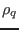
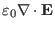
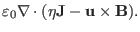
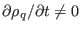
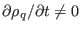

It is well known that the divergence of Faraday's law (4) is
written
which implies that
 will hold in later time if it
is satisfied at the initial time.
will hold in later time if it
is satisfied at the initial time.
Because the displacement current is neglected in Ampere's law, the divergence
of Ampere's law is written
On the other hand, the charge density is defined through Poisson's equation,
Eq. (7), i.e.,
|  |
|
 |
|
| |
 |
 |
(11) |
which indicates that the charge density  is usually time dependent,
i.e.,
. Therefore the charge conservation
is not guaranteed in this framework. This inconsistency is obviously due to
the fact that we neglect the displacement current
is usually time dependent,
i.e.,
. Therefore the charge conservation
is not guaranteed in this framework. This inconsistency is obviously due to
the fact that we neglect the displacement current
 in Ampere's law. Since, for low frequency phenomena, the
displacement current
term is usually much
smaller than the the conducting current
in Ampere's law. Since, for low frequency phenomena, the
displacement current
term is usually much
smaller than the the conducting current
 , neglecting the
displacement current term induces only small errors in calculating
by using Eq. (5).
, neglecting the
displacement current term induces only small errors in calculating
by using Eq. (5).
yj
2015-09-04